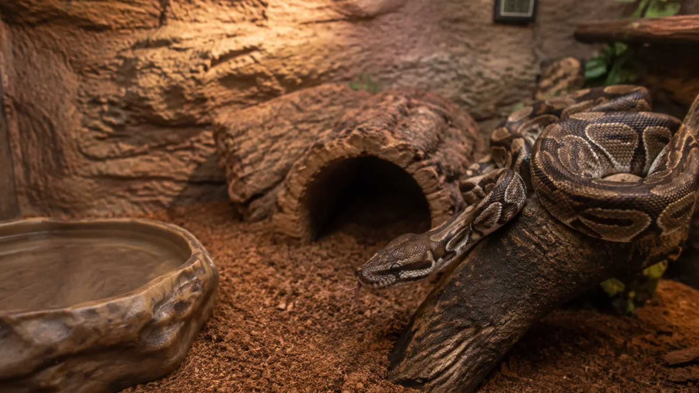

Minha cobra parou de defecar: isso é normal ou devo me preocupar?
Sua cobra parou de defecar? Entenda quando isso pode ser normal, os sinais de alerta e quando procurar um veterinário de répteis em Sorocaba.

Se você tem uma cobra como animal de estimação, provavelmente já percebeu que ela pode passar vários dias — ou até semanas — sem defecar. Em muitos casos isso é completamente normal. Porém, quando a ausência de fezes vem acompanhada de outros sinais, pode indicar um problema de saúde que precisa de atendimento veterinário.
A seguir, conheça as cinco principais causas para uma cobra parar de defecar.
1. Ainda não chegou a hora
Ao contrário de cães e gatos, as serpentes possuem um metabolismo muito mais lento. A frequência das fezes depende da espécie, idade, temperatura ambiente e do tamanho da última refeição.
Uma jiboia adulta, por exemplo, pode demorar semanas para eliminar as fezes sem que isso represente qualquer doença.
Principais sinais:
- Animal ativo.
- Alimentação normal.
- Sem aumento importante do volume abdominal.
- Comportamento habitual.
Principais exames:
- Na maioria dos casos, apenas um exame clínico completo é suficiente para confirmar que tudo está dentro da normalidade.
2. Temperatura inadequada
A digestão das serpentes depende completamente da temperatura corporal, que é regulada pelo ambiente. Se o terrário estiver frio, o alimento demora muito mais para ser digerido e a evacuação pode atrasar.
Esse é um dos erros de manejo mais comuns.
Principais sinais:
- Digestão muito lenta.
- Pouca atividade.
- Permanência constante sob a fonte de calor.
Principais exames:
- Avaliação clínica.
- Verificação das temperaturas do terrário.
- Avaliação do manejo ambiental.
3. Desidratação
Quando a cobra não ingere água suficiente ou vive em um ambiente muito seco, as fezes podem ficar endurecidas, dificultando sua eliminação.
Principais sinais:
- Pele ressecada.
- Mudas incompletas.
- Fezes muito secas quando eliminadas.
- Apatia em alguns casos.
Principais exames:
- Exame físico.
- Avaliação do estado de hidratação.
- Exames laboratoriais quando necessário.
4. Obstrução intestinal
A ingestão de substratos inadequados, presas muito grandes ou outros corpos estranhos pode causar obstrução intestinal. Esse quadro é considerado uma urgência veterinária.
Principais sinais:
- Parou de se alimentar.
- Aumento do volume abdominal.
- Regurgitação.
- Ausência prolongada de fezes.
- Letargia.
Principais exames:
- Radiografia.
- Ultrassonografia.
- Exames laboratoriais.
Em alguns casos, pode ser necessária cirurgia para remover a obstrução.
5. Doenças sistêmicas
Infecções, doenças parasitárias, alterações hepáticas, renais e outras enfermidades também podem reduzir os movimentos intestinais e levar à ausência de fezes.
Principais sinais:
- Perda de peso.
- Falta de apetite.
- Apatia.
- Alterações respiratórias ou neurológicas, dependendo da doença.
Principais exames:
- Hemograma.
- Bioquímica sérica.
- Exame coproparasitológico.
- Radiografia.
- Ultrassonografia.
A importância da internação
Nem toda cobra que demora para defecar precisa ser internada. Entretanto, quando existe obstrução intestinal, desidratação importante, regurgitação frequente ou comprometimento do estado geral, a internação pode ser fundamental.
Durante esse período é possível realizar fluidoterapia, controlar a temperatura corporal de forma adequada, monitorar a evolução clínica, oferecer suporte intensivo e realizar exames seriados, aumentando significativamente as chances de recuperação.
Corrigindo o manejo
Grande parte dos problemas digestivos em serpentes está relacionada ao manejo.
Alguns cuidados são fundamentais:
- Mantenha a temperatura correta para a espécie.
- Ofereça gradiente térmico dentro do terrário.
- Disponibilize água limpa diariamente.
- Utilize substratos seguros, evitando materiais que possam ser ingeridos.
- Ofereça presas de tamanho adequado.
- Evite manipular a cobra logo após a alimentação.
- Faça avaliações periódicas com um médico-veterinário especializado em animais silvestres e exóticos.
Um manejo correto é a melhor forma de prevenir alterações digestivas.
Quando devo procurar um veterinário?
Procure atendimento imediatamente se sua cobra:
- Parou de comer por vários dias sem motivo aparente.
- Apresenta aumento importante do abdômen.
- Regurgitou alimento.
- Está apática.
- Tem dificuldade para respirar.
- Não defeca há muito tempo e apresenta qualquer outro sinal clínico.
Na maioria das vezes, a demora para defecar faz parte da fisiologia das serpentes. Porém, quando associada a alterações no comportamento ou na alimentação, ela pode ser o primeiro sinal de uma doença importante.
Dica da Fauna Pet
Nem toda cobra que demora para defecar está doente. O mais importante é observar o conjunto de sinais: alimentação, comportamento, temperatura do terrário e condição corporal. Sempre que houver dúvidas, procure um médico-veterinário especializado antes que um problema simples se torne uma emergência.
Sobre a Fauna Pet
A Fauna Pet é um hospital veterinário 24 horas em Sorocaba, especializado no atendimento de cães, gatos, aves, répteis, coelhos, roedores e outros pets não convencionais. Contamos com uma equipe preparada para oferecer consultas, exames laboratoriais, radiografia, ultrassonografia, internação veterinária e atendimento de emergência para animais silvestres e exóticos. Nosso compromisso é unir medicina veterinária baseada em evidências, tecnologia e cuidado individualizado para oferecer o melhor tratamento a cada paciente.
Se você percebeu qualquer alteração no comportamento ou na saúde do seu pet, procure atendimento veterinário o quanto antes. O diagnóstico precoce aumenta significativamente as chances de sucesso no tratamento.
Gostou deste conteúdo?
Então acompanhe a Fauna Pet no Instagram @fauna_pet, lá você encontra mais informações sobre este e muitos outros temas, além de conteúdos sobre medicina veterinária, comportamento animal, medicina preventiva, dicas de manejo, curiosidades, fotos, vídeos e um pouco da rotina da nossa equipe. É uma ótima forma de continuar aprendendo e descobrir como pequenos cuidados podem fazer uma grande diferença na saúde e no bem-estar do seu pet.
Escrito por Jhonatan Iannaccone Myszkowski Pereira CRMV-SP 43.777 Proprietário do Hospital Veterinário Fauna Pet
Referências
- Mader DR, Divers SJ. Current Therapy in Reptile Medicine and Surgery. Elsevier; 2023.
- Divers SJ, Stahl SJ. Mader's Reptile and Amphibian Medicine and Surgery. 3rd ed. Elsevier; 2019.
- Doneley B. Reptile Medicine and Surgery in Clinical Practice. Wiley-Blackwell; 2018.
- Jacobson ER. Infectious Diseases and Pathology of Reptiles. CRC Press; 2007.
- Barten SL. Gastrointestinal diseases of reptiles. Veterinary Clinics of North America: Exotic Animal Practice. 2006.
- Divers SJ. Diagnostic imaging in reptiles. Veterinary Clinics of North America: Exotic Animal Practice. 2010.